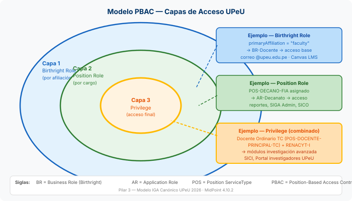
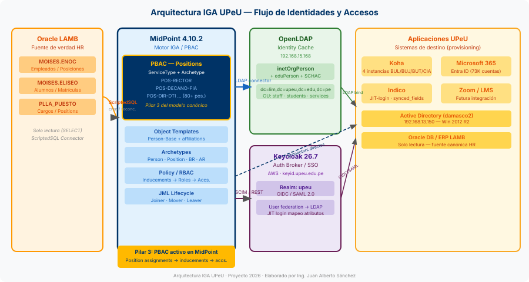
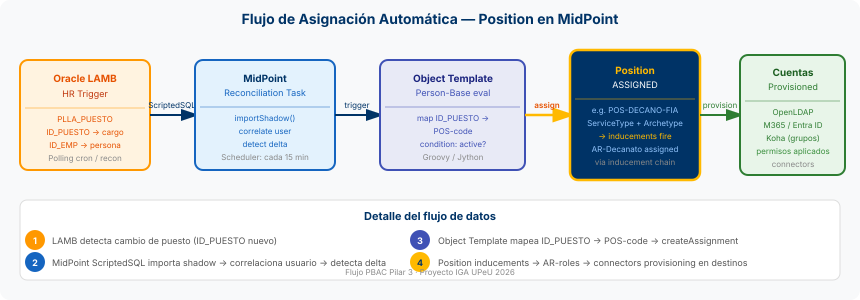
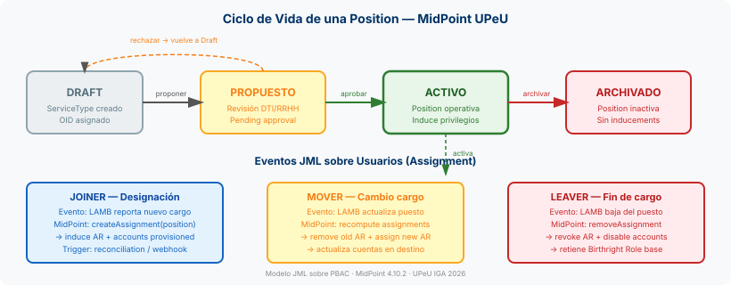
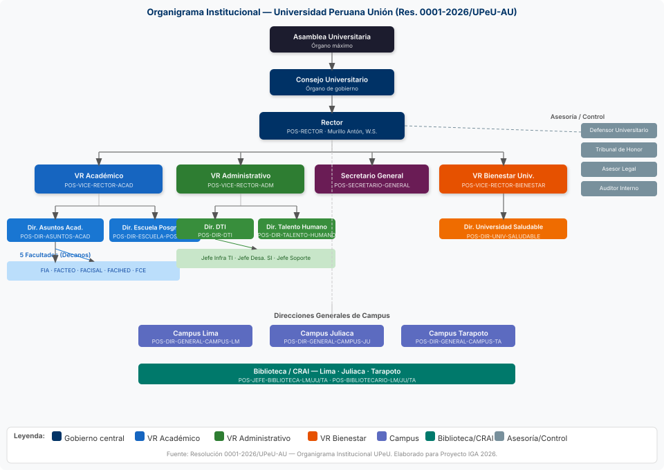

Catálogo de Positions Institucionales
Universidad Peruana Unión
Gobierno de Identidades (IGA) — Pilar 3: Position-Based Access Control (PBAC)
Sistema de Identidades MidPoint 4.10.2
| Versión | 1.0 — Borrador |
| Fecha | 2026-05-18 |
| Elaborado por | Ing. David Urquizo · Ing. Rudy Milán Napán |
| Coordinado por | Ing. Juan Alberto Sánchez — Gestor Proyecto IGA |
| Revisado por | Ing. David Barrantes Delgado — Director DTI |
| Aprobado por | PENDIENTE — por determinar conforme Ley 30220 |
| Clasificación | Documento interno — DTI / UPeU |
1. Introducción
1.1 Propósito del documento
Este documento establece el Catálogo oficial de Positions Institucionales de la Universidad Peruana Unión (UPeU), definidas como objetos de tipo ServiceType con archetype Position en el sistema de Gobierno de Identidades (IGA) MidPoint 4.10.2.
Las Positions constituyen el mecanismo central del Pilar 3 — Position-Based Access Control (PBAC) del Modelo Canónico IGA UPeU, por el cual cada cargo institucional conlleva privilegios de acceso digital específicos, asignados y revocados automáticamente conforme el sistema LAMB registra cambios en la planta laboral y académica.
1.2 Alcance
El presente catálogo abarca:
- Positions del campus Lima como sede principal, con extensiones a Juliaca y Tarapoto donde están confirmadas.
- Cargos de gobierno, académicos, administrativos, pastorales, de estudiantes con cargo y áreas operativas relevantes para el acceso digital.
- Posiciones plantilla (con sufijo
{EP},{FACU}, etc.) que se instancian por cada unidad académica.
Quedan fuera del alcance de este catálogo: los órganos colegiados (Asamblea Universitaria, Consejo Universitario, Consejos de Facultad) cuyos miembros no reciben acceso adicional por membresía, sino por sus cargos individuales ya incluidos.
1.3 Relación con el modelo IGA UPeU
El modelo IGA canónico de UPeU se articula en 4 pilares:
- Persona única — UserType + archetype Person. Identidad consolidada desde LAMB.
- Afiliaciones multivalor — Birthright Roles asignados por
primaryAffiliation(estudiante, docente, administrativo, egresado). - Position-Based Access Control (PBAC) ← este documento — Roles adicionales derivados del cargo específico.
- JML orquestado por LAMB — Eventos Joiner/Mover/Leaver disparan la asignación y revocación automática de Positions.
1.4 Glosario de términos
| Término | Definición |
|---|---|
| IGA | Identity Governance and Administration — disciplina y plataforma de gobierno de identidades. |
| PBAC | Position-Based Access Control — modelo donde los accesos se derivan del cargo institucional. |
| Position | Objeto ServiceType en MidPoint con archetype Position. Representa un cargo institucional y sus inducements de acceso. |
| POS-code | Identificador canónico de una Position (e.g., POS-RECTOR). Estable ante cambios de titulares. |
| Birthright Role | Rol asignado automáticamente por afiliación (e.g., BR-Docente). Capa 1 del modelo. |
| Application Role (AR) | Rol que mapea a permisos en un sistema específico (e.g., AR-Decanato-Canvas). |
| Inducement | Relación en MidPoint que hace que un rol asigne automáticamente otro rol o cuenta al usuario. |
| LAMB | Sistema ERP denominacional de UPeU (Oracle). Fuente de verdad de datos HR y académicos. |
| JML | Joiner-Mover-Leaver — ciclo de vida laboral. Los eventos JML disparan asignaciones en MidPoint. |
| OID | Object Identifier — UUID único de un objeto en MidPoint. Estable en el tiempo. |
| ServiceType | Tipo de objeto MidPoint utilizado para modelar servicios, recursos y positions. |
2. Marco normativo
2.1 Ley 30220 — Ley Universitaria
La Ley N° 30220 (promulgada 2014-07-09) es la norma fundamental del sistema universitario peruano. Para efectos de este catálogo, son relevantes:
- Art. 63-72: Régimen del docente universitario — categorías (Principal, Asociado, Auxiliar), dedicaciones (TC, TP), docentes extraordinarios (Honorario, Emérito, Visitante).
- Art. 55-62: Gobierno universitario — Rector, Vicerrectores, Decanos, Jefes de Departamento.
- Art. 73-79: Carrera del personal no docente.
- Art. 135-140: Régimen económico. Condiciona el acceso a sistemas financieros.
POS-DOCENTE-PRINCIPAL-TC, etc.) se alinea directamente con las categorías establecidas en el art. 64 de la Ley 30220, garantizando trazabilidad normativa en el modelo IGA.
2.2 Estatuto UPeU
El Estatuto de la Universidad Peruana Unión, conforme a la Ley 30220 y el modelo educativo adventista, define la estructura orgánica institucional, los órganos de gobierno y las competencias de cada cargo. Las posiciones de este catálogo son consistentes con el organigrama estatutario vigente.
2.3 Resolución N° 0001-2026/UPeU-AU — Organigrama Institucional
La Resolución de Asamblea Universitaria N° 0001-2026/UPeU-AU (enero 2026) aprueba el organigrama institucional vigente. Este documento es la fuente primaria para la estructura jerárquica de las Positions, con los siguientes niveles:
- Asamblea Universitaria (AU) → Consejo Universitario (CU)
- Rectorado (Rector + Vicerrectores + Secretario General)
- Órganos de asesoría y control (Defensor, Tribunal de Honor, Auditor, etc.)
- Vicerrectorado Académico, Administrativo y de Bienestar Universitario
- Facultades, Escuelas Profesionales, Departamentos Académicos
- Direcciones de apoyo y áreas operativas por campus
2.4 Estándares IGA aplicados
| Estándar | Referencia | Aplicación en UPeU IGA |
|---|---|---|
| INCITS 359-2012 | Role Based Access Control (ANSI/INCITS 359) | Base conceptual del modelo RBAC extendido con PBAC. Define Roles, Assignments, Sessions. |
| ISO 24760-1:2019 | IT Security — Identity management framework | Marco de gestión de identidades: ciclo de vida, atributos, reclamaciones de identidad. |
| SCIM 2.0 | RFC 7643 / RFC 7644 | Protocolo de aprovisionamiento de identidades entre MidPoint y aplicaciones de destino. |
| eduPerson 2021 | Internet2 / MACE-Dir | Atributos LDAP para el ámbito universitario. Usado en OpenLDAP identity cache UPeU. |
| SCHAC v1.5 | REFEDS SCHAC | Schema para atributos de identidad en instituciones de educación superior. Complementa eduPerson. |
3. Arquitectura PBAC en MidPoint
3.1 Modelo conceptual — qué es una Position en IGA
En el modelo IGA canónico de UPeU, una Position es una abstracción que representa un cargo institucional formal, independiente de la persona que lo ocupa en un momento dado. Este enfoque aporta:
- Estabilidad: El POS-code no cambia cuando cambia el titular.
- Trazabilidad: Cada acceso digital puede rastrearse hasta la norma que justifica el cargo.
- Automatización JML: Cuando LAMB registra que una persona asume o deja un cargo, MidPoint asigna o revoca la Position sin intervención manual.
- Separación de responsabilidades: La Position define qué se accede; la política RBAC define cómo se controla.

3.2 Position como ServiceType en MidPoint
En MidPoint 4.10.2, las Positions se implementan como objetos ServiceType con el archetype Position (OID: b51e4e39-fc48-42ef-9916-3b7ad6647b9b). El archetype impone:
- Validación del atributo
identifiercon patrónPOS-[A-Z0-9-]+ - Restricción de asignación: solo usuarios con
primaryAffiliationcorrespondiente pueden recibir la Position. - Template de inducements: cada Position induce los Application Roles que corresponden al cargo.
<!-- Estructura básica de una Position en MidPoint --> <service xmlns="http://midpoint.evolveum.com/xml/ns/public/common/common-3" oid="[UUID generado]"> <name>POS-RECTOR</name> <description>Rector de la Universidad Peruana Unión</description> <assignment> <targetRef oid="b51e4e39-fc48-42ef-9916-3b7ad6647b9b" type="ArchetypeType"/> <!-- Archetype Position --> </assignment> <identifier>POS-RECTOR</identifier> <displayName>Rector</displayName> <!-- Inducements que otorga esta Position --> <inducement> <targetRef oid="[OID AR-Rector-Admin]" type="RoleType"/> </inducement> </service>
3.3 Flujo: LAMB → MidPoint → Position → Privilegios


3.4 Diferencia entre Position y Rol de Afiliación (Birthright Role)
| Aspecto | Birthright Role (Pilar 2) | Position Role (Pilar 3) |
|---|---|---|
| Fuente de asignación | primaryAffiliation (estudiante/docente/admin) | Cargo en LAMB (ID_PUESTO) |
| Cardinalidad | Generalmente 1 por persona | Puede ser múltiple (e.g., Docente + Investigador RENACYT) |
| Duración | Mientras dure la afiliación activa | Mientras dure la designación al cargo |
| Accesos que otorga | Accesos base: correo, LMS, sistemas de consulta | Accesos adicionales específicos del cargo |
| Ejemplos | BR-Docente, BR-Estudiante | POS-DECANO-FIA, POS-DIR-DTI |
| Persiste tras fin de cargo | Sí (mientras afiliación activa) | No — se revoca con el JML Leaver del cargo |
3.5 Ciclo de vida de una Position

4. Organigrama Institucional
El siguiente diagrama muestra la estructura jerárquica de UPeU conforme a la Resolución N° 0001-2026/UPeU-AU, con los cargos principales modelados como Positions en el sistema IGA.

Órganos de gobierno colegiado (no modelados como Position individual)
| Órgano | Composición | Acceso IGA |
|---|---|---|
| Asamblea Universitaria (AU) | Rector, Vicerrectores, Decanos, docentes elegidos, estudiantes | Por cargos individuales + atributo upeu:member:au |
| Consejo Universitario (CU) | Rector, VR, Decanos, representantes estudiantiles | Por cargos individuales + atributo upeu:member:cu |
| Consejo de Facultad (CF) | Decano, docentes de la facultad, representante estudiantil | Por cargos individuales + POS-REP-ESTUDIANTIL-{FACU} |
5. Catálogo de Positions
⟨pendiente⟩ se generarán al importar el objeto en MidPoint PROD. Los OIDs son estables una vez asignados y no cambian con cambios de titular o renombramiento.
ENOC, tabla PLLA_PERFIL_PUESTO — consultado el 2026-05-18 en modo solo lectura. El ID LAMB corresponde a ENOC.PLLA_PUESTO.ID_PUESTO, que es el identificador canónico del puesto en Oracle. La columna ID LAMB con valor – indica que el mapeo aún no ha sido confirmado con GTH.
5.1 Gobierno (Ley 30220)
| POS-code | ID LAMB | Nombre del cargo | Unidad | OID (MidPoint) | Fuente normativa | Titular actual |
|---|---|---|---|---|---|---|
| POS-RECTOR | 187 |
Rector
Ver misión y funcionesMisión (LAMB ID_PERFIL=1): Es el personero y representante legal de la UPeU. Responsable de la dirección, gestión y representación de la Universidad ante toda clase de autoridades y entidades públicas o privadas, nacionales e internacionales. Responsabilidades principales:
Experiencia requerida: 12 años mínimo. Autonomía: máxima (nivel 3). Competencias (Grupo Ejecutivo): Dirección de Personas, Empowerment, Iniciativa, Pensamiento Estratégico, Relaciones Públicas, Toma de Decisiones. |
Rectorado | ⟨pendiente⟩ | Ley 30220 art. 55 | Murillo Antón, Walter Sixto rectorado@upeu.edu.pe |
| POS-VICE-RECTOR-ACAD | 218 |
Vicerrector Académico
Ver misión y funcionesMisión (LAMB ID_PERFIL=81): Planificar, dirigir y supervisar los procesos académicos de la universidad. Experiencia requerida: 12–15 años. Autonomía: máxima (nivel 3). Competencias (Grupo Ejecutivo): Dirección de Personas, Empowerment, Iniciativa, Pensamiento Estratégico, Relaciones Públicas, Toma de Decisiones. |
Vicerrectorado Académico | ⟨pendiente⟩ | Ley 30220 art. 57 | Dávila Villavicencio, Roussel Dulio vicerrector@upeu.edu.pe |
| POS-VICE-RECTOR-ADM | 219 |
Vicerrector Administrativo
Ver misión y funcionesMisión (LAMB ID_PERFIL=2): Planificar, dirigir y supervisar los procesos administrativos y financieros de la universidad. Experiencia requerida: 12–15 años. Autonomía: máxima (nivel 3). Profesión requerida: Contabilidad (CNO 251003) / Economía o Administración (CNO 252001). Competencias (Grupo Ejecutivo): Dirección de Personas, Empowerment, Iniciativa, Pensamiento Estratégico, Relaciones Públicas, Toma de Decisiones. |
Vicerrectorado Administrativo | ⟨pendiente⟩ | Ley 30220 art. 57 | Lévano Chambi, Jimmy gerencia@upeu.edu.pe |
| POS-VICE-RECTOR-BIENESTAR | 220 |
Vicerrector de Bienestar Universitario
Ver misión y funcionesMisión (LAMB ID_PERFIL=124): Constatar la ejecución del planeamiento estratégico; realizar visitas periódicas a unidades; coordinar reuniones de gestión. Experiencia requerida: 12–15 años. Autonomía: máxima (nivel 3). Competencias (Grupo Ejecutivo): Dirección de Personas, Empowerment, Iniciativa, Pensamiento Estratégico, Relaciones Públicas, Toma de Decisiones. |
Vicerrectorado de Bienestar | ⟨pendiente⟩ | Estatuto UPeU | Gómez Nicoll, Raúl Daniel vicerrector.bu@upeu.edu.pe |
| POS-SECRETARIO-GENERAL | 205 |
Secretario General
Ver misión y funcionesMisión (LAMB ID_PERFIL=33): Gestionar la documentación oficial de la universidad; certificar actos administrativos y resoluciones del Rectorado y Consejo Universitario. Experiencia requerida: 2 años. Profesión requerida: Derecho / Administración. Competencias (Grupo Directores): Autocontrol, Capacidad de Planificación y Organización, Comunicación, Dirección de Equipos de Trabajo, Liderazgo. |
Rectorado | ⟨pendiente⟩ | Ley 30220 art. 62 | Gonzales Taco, René Wilberth secgeneral@upeu.edu.pe |
5.2 Asesoría y Control / Rectorado
| POS-code | ID LAMB | Nombre del cargo | Unidad | OID | Fuente normativa | Titular actual |
|---|---|---|---|---|---|---|
| POS-DEFENSOR-UNIVERSITARIO | - | Defensor Universitario | Rectorado | ⟨pendiente⟩ | Ley 30220 art. 130 | Por confirmar |
| POS-TRIBUNAL-HONOR | - | Miembro Tribunal de Honor Universitario | Rectorado | ⟨pendiente⟩ | Estatuto UPeU | Por confirmar |
| POS-DIR-COOPERACION-PROYECTOS | - | Director de Cooperación y Proyectos | Rectorado | ⟨pendiente⟩ | Res. 0001-2026 | Por confirmar |
| POS-DIR-PLANIF-CALIDAD | 106 |
Director de Planificación y Gestión de la Calidad
Ver misión y funcionesResponsabilidades principales:
Competencias (Grupo Directores): Autocontrol, Capacidad de Planificación y Organización, Comunicación, Dirección de Equipos de Trabajo, Liderazgo. |
Planificación | ⟨pendiente⟩ | Res. 0001-2026 | Apaza Romero, Godofredo |
| POS-AUDITOR-INTERNO | - | Auditor Interno | Auditoría Interna | ⟨pendiente⟩ | Ley 30225 | Por confirmar |
| POS-DIR-IMAGEN-RRPP | - | Director de Imagen Institucional y RRPP | Imagen Institucional | ⟨pendiente⟩ | Res. 0001-2026 | Por confirmar |
| POS-DIR-MISION | - | Director de Misión | Misión | ⟨pendiente⟩ | Estatuto UPeU | Por confirmar |
| POS-DIR-FONDO-EDITORIAL | - | Director de Fondo Editorial | Fondo Editorial Unión | ⟨pendiente⟩ | Res. 0001-2026 | Por confirmar |
| POS-ASESOR-LEGAL | - | Asesor Legal | Asesoría Jurídica | ⟨pendiente⟩ | Estatuto UPeU | Por confirmar |
5.3 Vicerrectorado Académico
| POS-code | ID LAMB | Nombre del cargo | Unidad | OID | Fuente normativa | Titular actual |
|---|---|---|---|---|---|---|
| POS-DIR-ASUNTOS-ACAD | 99 |
Director Académico Universitario | VR Académico | ⟨pendiente⟩ | Res. 0001-2026 | Saavedra Vascónez, Carlos Eduardo |
| POS-DIR-INV-INNOVACION | 117 |
Director General de Investigación
Ver misión y funcionesMisión (LAMB ID_PERFIL=64): Promover convenios interinstitucionales de investigación; evaluar investigación docente anual; gestionar fondos CONCYTEC/RENACYT. Responsabilidades principales:
Titulares activos: 2 (Lima). Competencias (Grupo Directores): Autocontrol, Capacidad de Planificación y Organización, Comunicación, Dirección de Equipos, Liderazgo. |
Investigación | ⟨pendiente⟩ | Ley 30220 art. 48 | Huancahuire Vega, Salomón / Robles Lirio, Freddy Jesús |
| POS-DIR-EDUC-DISTANCIA | - | Director de Educación Adventista a Distancia | VR Académico | ⟨pendiente⟩ | Res. 0001-2026 | Cotacallapa Subia, Luis Eddie direccion.ead@upeu.edu.pe |
| POS-DECANO-FIA | 97 |
Decano Facultad de Ingeniería y Arquitectura
Ver misión y funcionesMisión (LAMB ID_PERFIL=89/185/231/281/300): El decano es la máxima autoridad de la facultad, responsable de dirigir la gestión administrativa y académica de su facultad conforme a la Ley 30220 y el Estatuto UPeU. Responsabilidades principales:
Experiencia requerida: 10–12 años. Competencias (Grupo Decanos): Autocontrol, Capacidad de Planificación, Desarrollo de Relaciones, Dirección de Equipos, Iniciativa. |
FIA | ⟨pendiente⟩ | Ley 30220 art. 60 | Acuña Salinas, Erika Inés decanatura.fia@upeu.edu.pe |
| POS-DECANO-FACTEO | 97 |
Decano Facultad de Ciencias Teológicas | FACTEO | ⟨pendiente⟩ | Ley 30220 art. 60 | Rojas Yauri, Benjamín decano.teologia@upeu.edu.pe |
| POS-DECANO-FACISAL | 97 |
Decano Facultad de Ciencias de la Salud | FACISAL | ⟨pendiente⟩ | Ley 30220 art. 60 | Fernández Molocho, Lili Albertina decanatura.fcs@upeu.edu.pe |
| POS-DECANO-FACIHED | 97 |
Decano Facultad de Ciencias Humanas y Educación | FACIHED | ⟨pendiente⟩ | Ley 30220 art. 60 | Maquera Sosa, Jorge Platón decanatura.facihed@upeu.edu.pe |
| POS-DECANO-FCE | 97 |
Decano Facultad de Ciencias Empresariales | FCE | ⟨pendiente⟩ | Ley 30220 art. 60 | De La Cruz Vargas, Alexander David decanatura.fce@upeu.edu.pe |
| POS-DIR-EP-{EP} | 103 |
Director de Escuela Profesional plantilla | Facultad correspondiente | ⟨pendiente por EP⟩ | Ley 30220 art. 61 | Por instancia |
| POS-JEFE-DPTO-ACAD-{DPTO} | - | Jefe de Departamento Académico plantilla | Facultad correspondiente | ⟨pendiente por Dpto⟩ | Ley 30220 art. 62 | Por instancia |
| POS-DIR-ESCUELA-POSGRADO | 118 |
Director de la Escuela de Posgrado | Escuela de Posgrado | ⟨pendiente⟩ | Ley 30220 art. 65 | Quinteros Zúñiga, Damaris Susana |
| POS-DIR-UNIDAD-POSGRADO-{EP} | 109 |
Director de Unidad de Posgrado plantilla | Escuela de Posgrado | ⟨pendiente por EP⟩ | Ley 30220 art. 65 | Por instancia |
| POS-DOCENTE-PRINCIPAL-TC | - | Docente Ordinario Principal — Tiempo Completo | Departamento Académico | ⟨pendiente⟩ | Ley 30220 art. 64 | Múltiples titulares |
| POS-DOCENTE-PRINCIPAL-TP | - | Docente Ordinario Principal — Tiempo Parcial | Departamento Académico | ⟨pendiente⟩ | Ley 30220 art. 64 | Múltiples titulares |
| POS-DOCENTE-ASOCIADO-TC | - | Docente Ordinario Asociado — Tiempo Completo | Departamento Académico | ⟨pendiente⟩ | Ley 30220 art. 64 | Múltiples titulares |
| POS-DOCENTE-ASOCIADO-TP | - | Docente Ordinario Asociado — Tiempo Parcial | Departamento Académico | ⟨pendiente⟩ | Ley 30220 art. 64 | Múltiples titulares |
| POS-DOCENTE-AUXILIAR-TC | - | Docente Ordinario Auxiliar — Tiempo Completo | Departamento Académico | ⟨pendiente⟩ | Ley 30220 art. 64 | Múltiples titulares |
| POS-DOCENTE-AUXILIAR-TP | - | Docente Ordinario Auxiliar — Tiempo Parcial | Departamento Académico | ⟨pendiente⟩ | Ley 30220 art. 64 | Múltiples titulares |
| POS-DOCENTE-CONTRATADO | - | Docente Contratado | Departamento Académico | ⟨pendiente⟩ | Ley 30220 art. 67 | Múltiples titulares |
| POS-DOCENTE-HONORARIO | - | Docente Extraordinario Honorario | Rectorado | ⟨pendiente⟩ | Ley 30220 art. 68 | Por confirmar |
| POS-DOCENTE-EMERITO | - | Docente Extraordinario Emérito | Rectorado | ⟨pendiente⟩ | Ley 30220 art. 68 | Por confirmar |
| POS-DOCENTE-VISITANTE | - | Docente Extraordinario Visitante | Rectorado | ⟨pendiente⟩ | Ley 30220 art. 68 | Por confirmar |
| POS-INVESTIGADOR-RENACYT-III | - | Investigador RENACYT — Categoría III | Investigación | ⟨pendiente⟩ | CONCYTEC Reglamento | Múltiples titulares |
| POS-INVESTIGADOR-RENACYT-II | - | Investigador RENACYT — Categoría II | Investigación | ⟨pendiente⟩ | CONCYTEC Reglamento | Múltiples titulares |
| POS-INVESTIGADOR-RENACYT-I | - | Investigador RENACYT — Categoría I | Investigación | ⟨pendiente⟩ | CONCYTEC Reglamento | Múltiples titulares |
| POS-INVESTIGADOR-CALIFICADO | - | Investigador CONCYTEC Calificado | Investigación | ⟨pendiente⟩ | CONCYTEC Reglamento | Múltiples titulares |
5.4 Vicerrectorado Administrativo
| POS-code | ID LAMB | Nombre del cargo | Unidad | OID | Fuente normativa | Titular actual |
|---|---|---|---|---|---|---|
| POS-DIR-DTI | 108 |
Director de Tecnologías de Información
Ver misión y funcionesMisión: Planificar, dirigir y supervisar los sistemas de información y tecnología de la universidad. Profesión requerida: Ingeniería de Sistemas/Informática (CNO 217007). Competencias (Grupo Directores): Autocontrol, Capacidad de Planificación y Organización, Comunicación, Dirección de Equipos de Trabajo, Liderazgo. |
DTI | ⟨pendiente⟩ | Res. 0001-2026 | Barrantes Delgado, David Jefferson digesi@upeu.edu.pe |
| POS-DIR-TALENTO-HUMANO | 114 |
Director de Gestión del Talento Humano
Ver misión y funcionesMisión (LAMB ID_PERFIL=22): El Director de Talento Humano lidera y controla la gestión laboral y organizacional de la UPeU, garantizando el cumplimiento de políticas institucionales y normativa laboral vigente. Responsabilidades principales:
Experiencia requerida: 3–5 años. Autonomía: nivel 1 (máxima en su área). Profesión requerida: Contabilidad (CNO 251003) / Psicología-RRHH (CNO 364004). Competencias (Grupo Directores): Autocontrol, Capacidad de Planificación y Organización, Comunicación, Dirección de Equipos de Trabajo, Liderazgo. |
GTH | ⟨pendiente⟩ | Res. 0001-2026 | Jaimes Soncco, Inés Elena director.dth@upeu.edu.pe |
| POS-DIR-FINANCIERO | 116 |
Director General Financiero Contable
Ver misión y funcionesResponsabilidades principales:
Profesión requerida: Contabilidad (CNO 251003). Competencias (Grupo Directores): Autocontrol, Capacidad de Planificación y Organización, Comunicación, Dirección de Equipos de Trabajo, Liderazgo. |
Finanzas | ⟨pendiente⟩ | Res. 0001-2026 | Torres Núñez, Mirtha Jeanette gerencia.financiera@upeu.edu.pe |
| POS-DIR-MARKETING | - | Director de Marketing | Marketing | ⟨pendiente⟩ | Res. 0001-2026 | Por confirmar |
| POS-DIR-INFRAESTRUCTURA | - | Director de Infraestructura | Infraestructura Física | ⟨pendiente⟩ | Res. 0001-2026 | Por confirmar |
| POS-DIR-OPERACIONES-CAMPUS-LM | - | Director de Operaciones Campus Lima | Campus Lima | ⟨pendiente⟩ | Res. 0001-2026 | Por confirmar |
| POS-DIR-OPERACIONES-CAMPUS-JU | - | Director de Operaciones Campus Juliaca | Campus Juliaca | ⟨pendiente⟩ | Res. 0001-2026 | Carranza Quiroz, José Obed gerenciaj@upeu.edu.pe |
| POS-DIR-OPERACIONES-CAMPUS-TA | - | Director de Operaciones Campus Tarapoto | Campus Tarapoto | ⟨pendiente⟩ | Res. 0001-2026 | Flores Quinteros, Fernando Gerardo gerencia.tpp@upeu.edu.pe |
| POS-DIR-PROD-IMPRENTA | - | Director Centro de Producción Imprenta Unión | Imprenta Unión | ⟨pendiente⟩ | Res. 0001-2026 | Por confirmar |
| POS-DIR-PROD-BIENES | - | Director Centro de Producción de Bienes Unión | Bienes Unión | ⟨pendiente⟩ | Res. 0001-2026 | Por confirmar |
| POS-JEFE-INFRA-TI | - | Jefe de Infraestructura TI | DTI | ⟨pendiente⟩ | Res. 0001-2026 | Por confirmar |
| POS-JEFE-DESARROLLO-SI | - | Jefe de Desarrollo de Sistemas de Información | DTI | ⟨pendiente⟩ | Res. 0001-2026 | Por confirmar |
| POS-JEFE-SOPORTE-TI | - | Jefe de Soporte TI / Helpdesk | DTI | ⟨pendiente⟩ | Res. 0001-2026 | Por confirmar |
| POS-ANALISTA-SI | - | Analista de Sistemas | DTI | ⟨pendiente⟩ | Res. 0001-2026 | Múltiples titulares |
| POS-TECNICO-TI | - | Técnico TI | DTI | ⟨pendiente⟩ | Res. 0001-2026 | Múltiples titulares |
| POS-COORD-SELECCION | - | Coordinador de Selección y Contratación | GTH | ⟨pendiente⟩ | Res. 0001-2026 | Por confirmar |
| POS-COORD-CAPACITACION | - | Coordinador de Capacitación y Desarrollo | GTH | ⟨pendiente⟩ | Res. 0001-2026 | Por confirmar |
| POS-COORD-REMUNERACIONES | - | Coordinador de Remuneraciones y Planillas | GTH | ⟨pendiente⟩ | Res. 0001-2026 | Por confirmar |
| POS-ASIST-RRHH | - | Asistente de Recursos Humanos | GTH | ⟨pendiente⟩ | Res. 0001-2026 | Múltiples titulares |
5.5 Vicerrectorado de Bienestar Universitario
| POS-code | ID LAMB | Nombre del cargo | Unidad | OID | Fuente normativa | Titular actual |
|---|---|---|---|---|---|---|
| POS-DIR-UNIV-SALUDABLE | - | Director de Universidad Saludable | Bienestar | ⟨pendiente⟩ | Res. 0001-2026 | Por confirmar |
| POS-DIR-BIENESTAR-UNIV | - | Director de Bienestar Universitario | Bienestar | ⟨pendiente⟩ | Ley 30220 art. 127 | Por confirmar |
| POS-DIR-PROG-DEPORTIVO | - | Director Programa Deportivo de Alta Competencia | Bienestar | ⟨pendiente⟩ | Res. 0001-2026 | Por confirmar |
| POS-DIR-INST-COLPORTOR | - | Director Instituto de Desarrollo del Estudiante Colportor | Bienestar | ⟨pendiente⟩ | Estatuto UPeU | Por confirmar |
5.6 Dirección General de Campus
| POS-code | ID LAMB | Nombre del cargo | Campus | OID | Fuente normativa | Titular actual |
|---|---|---|---|---|---|---|
| POS-DIR-GENERAL-CAMPUS-LM | 104 |
Director General de Campus Lima | Lima | ⟨pendiente⟩ | Res. 0001-2026 | Por confirmar DirectorGeneralLima@upeu.edu.pe |
| POS-DIR-GENERAL-CAMPUS-JU | 104 |
Director General de Campus Juliaca | Juliaca | ⟨pendiente⟩ | Res. 0001-2026 | Coaquira Tuco, Carlos Mediver dirgeneralj@upeu.edu.pe |
| POS-DIR-GENERAL-CAMPUS-TA | 104 |
Director General de Campus Tarapoto | Tarapoto | ⟨pendiente⟩ | Res. 0001-2026 | Vallejos Atalaya, María dg.tpp@upeu.edu.pe |
5.7 Biblioteca / CRAI
| POS-code | ID LAMB | Nombre del cargo | Sede | OID | Fuente normativa | Titular actual |
|---|---|---|---|---|---|---|
| POS-JEFE-BIBLIOTECA-LM | 112 |
Jefe Biblioteca Lima (BUL)
Ver misión y funcionesMisión (LAMB ID_PERFIL=382): Planificar los servicios bibliotecarios del CRAI; dirigir recursos humanos y procesos; formular programa de desarrollo del Centro de Recursos para el Aprendizaje e Investigación. Experiencia requerida: 5 años. Titulares activos: 2 (Lima). Competencias (Grupo Directores): Autocontrol, Capacidad de Planificación y Organización, Comunicación, Dirección de Equipos de Trabajo, Liderazgo. |
Lima | ⟨pendiente⟩ | Res. 0001-2026 | Orrego Granados, David director.crai@upeu.edu.pe |
| POS-JEFE-BIBLIOTECA-JU | 112 |
Jefe Biblioteca Juliaca (BUJ) | Juliaca | ⟨pendiente⟩ | Res. 0001-2026 | Por confirmar |
| POS-JEFE-BIBLIOTECA-TA | 112 |
Jefe Biblioteca Tarapoto (BUT) | Tarapoto | ⟨pendiente⟩ | Res. 0001-2026 | Por confirmar |
| POS-BIBLIOTECARIO-LM | - | Bibliotecario Lima | Lima | ⟨pendiente⟩ | Res. 0001-2026 | Múltiples titulares |
| POS-BIBLIOTECARIO-JU | - | Bibliotecario Juliaca | Juliaca | ⟨pendiente⟩ | Res. 0001-2026 | Múltiples titulares |
| POS-BIBLIOTECARIO-TA | - | Bibliotecario Tarapoto | Tarapoto | ⟨pendiente⟩ | Res. 0001-2026 | Múltiples titulares |
5.8 Estudiantes con cargo
| POS-code | ID LAMB | Nombre del cargo | Unidad | OID | Fuente normativa | Titular actual |
|---|---|---|---|---|---|---|
| POS-ASIST-DOCENCIA | - | Asistente de Docencia | Departamento Académico | ⟨pendiente⟩ | Ley 30220 art. 72 | Múltiples titulares |
| POS-REP-ESTUDIANTIL-CU | - | Representante Estudiantil ante Consejo Universitario | Rectorado | ⟨pendiente⟩ | Ley 30220 art. 56 | Por confirmar |
| POS-REP-ESTUDIANTIL-{FACU} | - | Representante Estudiantil ante Consejo de Facultad plantilla | Facultad correspondiente | ⟨pendiente por Facultad⟩ | Ley 30220 art. 60 | Por instancia |
| POS-PRES-ASOCIACION-ESTUD-{FACU} | - | Presidente Asociación Estudiantil de Facultad plantilla | Facultad correspondiente | ⟨pendiente por Facultad⟩ | Estatuto UPeU | Por instancia |
5.9 Pastoral y Misión
| POS-code | ID LAMB | Nombre del cargo | Sede | OID | Fuente normativa | Titular actual |
|---|---|---|---|---|---|---|
| POS-CAPELLAN-LM | - | Capellán Universitario Lima | Lima | ⟨pendiente⟩ | Estatuto UPeU | Por confirmar |
| POS-CAPELLAN-JU | - | Capellán Universitario Juliaca | Juliaca | ⟨pendiente⟩ | Estatuto UPeU | Por confirmar |
| POS-CAPELLAN-TA | - | Capellán Universitario Tarapoto | Tarapoto | ⟨pendiente⟩ | Estatuto UPeU | Por confirmar |
| POS-COORD-ORATORIO | - | Coordinador de Oratorio Universitario | Misión | ⟨pendiente⟩ | Estatuto UPeU | Por confirmar |
| POS-COORD-MISIONES-ESTUD | - | Coordinador de Misiones Estudiantiles | Misión | ⟨pendiente⟩ | Estatuto UPeU | Por confirmar |
5.10 Áreas operativas adicionales
| POS-code | ID LAMB | Nombre del cargo | Unidad | OID | Fuente normativa | Titular actual |
|---|---|---|---|---|---|---|
| POS-DIR-CEPRE-LM | - | Director CEPRE Lima | CEPRE Lima | ⟨pendiente⟩ | Res. 0001-2026 | Por confirmar |
| POS-DIR-CEPRE-JU | - | Director CEPRE Juliaca | CEPRE Juliaca | ⟨pendiente⟩ | Res. 0001-2026 | Por confirmar |
| POS-DIR-CEPRE-TA | - | Director CEPRE Tarapoto | CEPRE Tarapoto | ⟨pendiente⟩ | Res. 0001-2026 | Por confirmar |
| POS-DOCENTE-CEPRE | - | Docente CEPRE | CEPRE | ⟨pendiente⟩ | Res. 0001-2026 | Múltiples titulares |
| POS-DIR-ENGLISH-FOR-YOU | - | Director Centro de Idiomas English for You | Centro de Idiomas | ⟨pendiente⟩ | Res. 0001-2026 | Por confirmar |
| POS-DOCENTE-IDIOMAS | - | Docente Centro de Idiomas | Centro de Idiomas | ⟨pendiente⟩ | Res. 0001-2026 | Múltiples titulares |
| POS-JEFE-SEGURIDAD-LM | - | Jefe de Seguridad Campus Lima | Seguridad Lima | ⟨pendiente⟩ | Res. 0001-2026 | Por confirmar |
| POS-JEFE-SEGURIDAD-JU | - | Jefe de Seguridad Campus Juliaca | Seguridad Juliaca | ⟨pendiente⟩ | Res. 0001-2026 | Por confirmar |
| POS-JEFE-SEGURIDAD-TA | - | Jefe de Seguridad Campus Tarapoto | Seguridad Tarapoto | ⟨pendiente⟩ | Res. 0001-2026 | Por confirmar |
| POS-AGENTE-SEGURIDAD | - | Agente de Seguridad | Seguridad | ⟨pendiente⟩ | Res. 0001-2026 | Múltiples titulares |
| POS-JEFE-MANTENIMIENTO-LM | - | Jefe de Mantenimiento Campus Lima | Mantenimiento Lima | ⟨pendiente⟩ | Res. 0001-2026 | Por confirmar |
| POS-JEFE-MANTENIMIENTO-JU | - | Jefe de Mantenimiento Campus Juliaca | Mantenimiento Juliaca | ⟨pendiente⟩ | Res. 0001-2026 | Por confirmar |
| POS-JEFE-MANTENIMIENTO-TA | - | Jefe de Mantenimiento Campus Tarapoto | Mantenimiento Tarapoto | ⟨pendiente⟩ | Res. 0001-2026 | Por confirmar |
| POS-MEDICO-UNIV | - | Médico Universitario | Bienestar | ⟨pendiente⟩ | Ley 30220 art. 127 | Múltiples titulares |
| POS-PSICOPEDAGOGO | - | Psicólogo Universitario | Bienestar | ⟨pendiente⟩ | Ley 30220 art. 127 | Múltiples titulares |
| POS-COORD-BECAS | - | Coordinador de Becas | Bienestar | ⟨pendiente⟩ | Ley 30220 art. 96 | Por confirmar |
| POS-COORD-TUTORIA | - | Coordinador de Tutoría Académica | VR Académico | ⟨pendiente⟩ | Ley 30220 art. 98 | Múltiples titulares |
6. Titulares actuales
| POS-code | ID PUESTO LAMB | Cargo | Titular actual | Fuente | Consulta |
|---|---|---|---|---|---|
| POS-RECTOR | 187 |
Rector | Murillo Antón, Walter Sixto rectorado@upeu.edu.pe | Directorio 2026 | 2026-05-18 |
| POS-VICE-RECTOR-ACAD | 218 |
Vicerrector Académico | Dávila Villavicencio, Roussel Dulio vicerrector@upeu.edu.pe | Directorio 2026 | 2026-05-18 |
| POS-VICE-RECTOR-ADM | 219 |
Vicerrector Administrativo | Lévano Chambi, Jimmy gerencia@upeu.edu.pe | Directorio 2026 | 2026-05-18 |
| POS-VICE-RECTOR-BIENESTAR | 220 |
Vicerrector de Bienestar Universitario | Gómez Nicoll, Raúl Daniel vicerrector.bu@upeu.edu.pe | Directorio 2026 | 2026-05-18 |
| POS-SECRETARIO-GENERAL | 205 |
Secretario General | Gonzales Taco, René Wilberth secgeneral@upeu.edu.pe | Directorio 2026 | 2026-05-18 |
| POS-DIR-ASUNTOS-ACAD | 99 |
Director Académico Universitario | Saavedra Vascónez, Carlos Eduardo | Oracle LAMB | 2026-05-18 |
| POS-DIR-DTI | 108 |
Director de Tecnologías de Información | Barrantes Delgado, David Jefferson digesi@upeu.edu.pe | Directorio 2026 | 2026-05-18 |
| POS-DIR-TALENTO-HUMANO | 114 |
Director de Gestión del Talento Humano | Jaimes Soncco, Inés Elena director.dth@upeu.edu.pe | Directorio 2026 | 2026-05-18 |
| POS-DIR-FINANCIERO | 116 |
Director General Financiero Contable | Torres Núñez, Mirtha Jeanette gerencia.financiera@upeu.edu.pe | Directorio 2026 | 2026-05-18 |
| POS-DIR-INV-INNOVACION | 117 |
Director General de Investigación | Huancahuire Vega, Salomón / Robles Lirio, Freddy Jesús director.dgi@upeu.edu.pe | Directorio 2026 | 2026-05-18 |
| POS-DIR-ESCUELA-POSGRADO | 118 |
Director de la Escuela de Posgrado | Quinteros Zúñiga, Damaris Susana dir.epg@upeu.edu.pe | Directorio 2026 | 2026-05-18 |
| POS-DIR-PLANIF-CALIDAD | 106 |
Director de Planificación y Gestión de la Calidad | Apaza Romero, Godofredo direccion.planificacion@upeu.edu.pe | Directorio 2026 | 2026-05-18 |
| POS-DIR-GENERAL-CAMPUS-JU | 104 |
Director General Campus Juliaca | Coaquira Tuco, Carlos Mediver dirgeneralj@upeu.edu.pe | Directorio 2026 | 2026-05-18 |
| POS-DIR-GENERAL-CAMPUS-TA | 104 |
Director General Campus Tarapoto | Vallejos Atalaya, María dg.tpp@upeu.edu.pe | Directorio 2026 | 2026-05-18 |
| POS-JEFE-BIBLIOTECA-LM | 112 |
Jefe Biblioteca / CRAI Lima | Orrego Granados, David director.crai@upeu.edu.pe | Directorio 2026 | 2026-05-18 |
7. Pendientes y gaps
Los siguientes ítems requieren información adicional antes de que el catálogo pueda considerarse completo para implementación:
-
D-04
Lista completa de Escuelas Profesionales por campus Juliaca y Tarapoto. Las instancias de
POS-DIR-EP-{EP}yPOS-DECANO-*para las sedes de Juliaca y Tarapoto están pendientes de mapeo formal a POS-codes. Sin embargo, el Directorio 2026 confirma las siguientes EPs activas:
Campus Juliaca (10 EPs confirmadas): JU EP ARQUITECTURA · JU EP CONTABILIDAD · JU EP ENFERMERÍA · JU EP ING. AMBIENTAL · JU EP ING. DE SISTEMAS · JU EP ING. IND. ALIMENTARIAS · JU EP NUTRICIÓN HUMANA · JU EP PSICOLOGÍA · JUEP ING. CIVIL · UN EAP EDUCACIÓN
Campus Tarapoto (4 facultades confirmadas): FACULTAD DE CIENCIAS DE LA SALUD · FACULTAD DE CIENCIAS EMPRESARIALES · FACULTAD DE CIENCIAS HUMANAS Y EDUCACIÓN · FACULTAD DE INGENIERÍA Y ARQUITECTURA — más ESCUELA DE POSGRADO
Pendiente: definir POS-codes canónicos para instancias por sede y coordinar con Vicerrectorado Académico de cada campus. -
D-05
Mapeo ID_CATEGORIAOCUPACIONAL → POS-code. Oracle LAMB usa el campo
ID_CATEGORIAOCUPACIONALpara clasificar empleados. Se requiere la tabla de mapeo completa de este campo a los POS-codes definidos en este catálogo. Pendiente con Gestión del Talento Humano (GTH). -
D-06
Nombre canónico de la Dirección de TI. En LAMB y documentos internos aparece como "DIGESI", "DIGETI" y "DTI". Se requiere definir el nombre canónico oficial en la Resolución 0001-2026/UPeU-AU para usar en el POS-code. El código provisional es
POS-DIR-DTI. -
D-07
Aprobación formal del catálogo conforme Ley 30220. El campo "Aprobado por" está pendiente. Se requiere identificar el órgano competente (Consejo Universitario o Rectorado) y obtener la resolución de aprobación antes de que los POS-codes sean vinculantes para el sistema IGA.
-
D-08
Titulares de cargos no confirmados. Varios cargos tienen titular "Por confirmar". Se requiere consulta directa con GTH para completar la información de Oracle LAMB para estos puestos.
-
D-09
Positions plantilla — instancias por EP y Facultad. Los POS-codes con sufijo
{EP}y{FACU}requieren expandirse a instancias concretas (e.g.,POS-DIR-EP-INGENIERIA-SISTEMAS). Pendiente lista definitiva de EPs de Lima, Juliaca y Tarapoto.
8. Guía de implementación MidPoint
8.1 Crear un objeto Position en MidPoint
Las Positions se crean como objetos XML de tipo ServiceType y se importan via REST API o MidPoint Ninja. Cada Position debe:
- Tener un OID fijo, generado una sola vez con
uuidgeno equivalente. - Asignar el archetype Position (OID:
b51e4e39-fc48-42ef-9916-3b7ad6647b9b). - Declarar sus inducements (Application Roles que otorga).
- Incluir metadata de auditoría (quién la creó, fecha, fuente normativa).
<!-- Ejemplo completo: POS-DIR-DTI --> <service xmlns="http://midpoint.evolveum.com/xml/ns/public/common/common-3" xmlns:q="http://prism.evolveum.com/xml/ns/public/query-3" oid="[UUID-unico-generado]"> <name>POS-DIR-DTI</name> <description>Director de Tecnologías de Información — DTI UPeU</description> <documentation> Fuente normativa: Resolución 0001-2026/UPeU-AU. Titular actual: Barrantes Delgado, David Jefferson. Consulta LAMB: ENOC.PLLA_PUESTO, 2026-05-18. </documentation> <!-- Archetype Position --> <assignment> <targetRef oid="b51e4e39-fc48-42ef-9916-3b7ad6647b9b" type="ArchetypeType"/> </assignment> <identifier>POS-DIR-DTI</identifier> <displayName>Director de Tecnologías de Información</displayName> <!-- Inducements: Application Roles que otorga esta Position --> <inducement> <targetRef oid="[OID AR-DTI-Admin]" type="RoleType"/> </inducement> <inducement> <targetRef oid="[OID AR-M365-Admin]" type="RoleType"/> </inducement> </service>
8.2 Mapeo Oracle LAMB → MidPoint Position
El campo ENOC.PLLA_PUESTO.ID_PUESTO es el identificador canónico de un puesto en Oracle LAMB. La siguiente tabla muestra el mapeo confirmado entre ID_PUESTO y el POS-code del catálogo:
| ID_PUESTO | Nombre en LAMB | POS-code IGA | Titulares activos (Lima) |
|---|---|---|---|
187 | Rector | POS-RECTOR | 1 |
218 | Vicerrector Académico | POS-VICE-RECTOR-ACAD | 1 |
219 | Vicerrector Administrativo | POS-VICE-RECTOR-ADM | 1 |
220 | Vicerrector de Bienestar Universitario | POS-VICE-RECTOR-BIENESTAR | 1 |
205 | Secretario General | POS-SECRETARIO-GENERAL | 1 |
97 | Decano de Facultad | POS-DECANO-{FACU} | 5 |
103 | Director de Escuela Profesional | POS-DIR-EP-{EP} | 13 |
108 | Director de Tecnologías de Información | POS-DIR-DTI | 1 |
114 | Director de Gestión del Talento Humano | POS-DIR-TALENTO-HUMANO | 1 |
116 | Director General Financiero Contable | POS-DIR-FINANCIERO | 1 |
117 | Director General de Investigación | POS-DIR-INV-INNOVACION | 2 |
118 | Director de la Escuela de Posgrado | POS-DIR-ESCUELA-POSGRADO | 1 |
109 | Director de Unidad de Posgrado | POS-DIR-UNIDAD-POSGRADO-{EP} | 6 |
106 | Director de Planificación y Gestión de la Calidad | POS-DIR-PLANIF-CALIDAD | 1 |
112 | Director del CRAI | POS-JEFE-BIBLIOTECA-LM | 2 |
99 | Director Académico Universitario | POS-DIR-ASUNTOS-ACAD | 1 |
104 | Director de Filial | POS-DIR-GENERAL-CAMPUS-{SEDE} | 2 |
Query SQL de correlación recomendada — obtiene el puesto activo de cada trabajador en Lima (ID_ENTIDAD = 7124):
SELECT t.ID_TRABAJADOR, tp.ID_PUESTO, pst.NOMBRE as PUESTO,
g.NOMBRE as CATEGORIA, tp.ID_PERFIL_PUESTO
FROM MOISES.TRABAJADOR t
JOIN MOISES.TRABAJADOR_PUESTO tp ON tp.ID_TRABAJADOR = t.ID_TRABAJADOR AND tp.HASTA IS NULL
JOIN ENOC.PLLA_PUESTO pst ON tp.ID_PUESTO = pst.ID_PUESTO
JOIN ENOC.PLLA_GRUPO_ESCALA g ON pst.ID_GRUPO_ESCALA = g.ID_GRUPO_ESCALA
WHERE t.ID_ENTIDAD = 7124 AND t.FECHA_FIN_EFECTIVO IS NULL
ID_PERFIL_PUESTO es el identificador a nivel de instancia — un mismo puesto puede tener múltiples perfiles por área/dependencia (e.g., Decano de FIA vs Decano de FACISAL son el mismo ID_PUESTO=97 pero distintos ID_PERFIL_PUESTO). Para PBAC en MidPoint se usa ID_PUESTO como identificador del objeto Position. El ID_PERFIL_PUESTO se usa para determinar a qué instancia de Position plantilla corresponde el usuario.
8.3 Asignar una Position a un usuario
Las Positions se asignan automáticamente via Object Template cuando el inbound mapping de LAMB mapea el ID_PUESTO al POS-code correspondiente. También pueden asignarse manualmente vía UI de MidPoint o REST API:
<!-- Fragmento: assignment en UserType --> <assignment> <targetRef oid="[OID de POS-DIR-DTI]" type="ServiceType"/> <activation> <validFrom>2026-01-01T00:00:00Z</validFrom> <!-- validTo: omitir si no hay fecha de fin conocida --> </activation> </assignment>
8.4 Convención de OIDs para Positions UPeU
| Tipo de objeto | Rango OID | Método de generación |
|---|---|---|
| Positions (ServiceType) | UUID v4 aleatorio | uuidgen en macOS/Linux, o MidPoint autogenera al importar |
| Archetypes | UUID v4 fijo, definido en XML | Definido en el spec canónico UPeU, no cambiar |
| Business Roles | UUID v4 aleatorio | Generado al crear el rol en MidPoint |
displayName y el description, no el OID ni el name (POS-code).
8.5 Importar Positions via REST API
# Importar Position via REST API MidPoint (desde Mac local)
curl -k -u administrator:SECRET \
-H "Content-Type: application/xml" \
-X POST \
"https://192.168.15.166:8443/midpoint/ws/rest/services" \
--data-binary @POS-DIR-DTI.xml
8.6 Verificar Position importada
# Buscar Position por identifier
curl -k -u administrator:SECRET \
"https://192.168.15.166:8443/midpoint/ws/rest/services?q=POS-DIR-DTI"
9. Referencias
-
Ley N° 30220 — Ley Universitaria Peruana (2014). Congreso de la República del Perú.
https://www.gob.pe/institucion/congreso-de-la-republica/normas-legales/243402-30220 -
Resolución N° 0001-2026/UPeU-AU — Organigrama Institucional UPeU. Asamblea Universitaria UPeU, enero 2026.
Documento interno UPeU. -
Semančík, R. et al. — "Practical Identity Management with MidPoint" v2.3 (2024). Evolveum.
https://evolveum.com/downloads/ -
MidPoint 4.10 Documentation. Evolveum.
https://docs.evolveum.com/midpoint/reference/4.10/ -
INCITS 359-2012 — Role Based Access Control (ANSI). American National Standards Institute.
https://www.incits.org/Standards/Approved-Withdrawn-Standards-by-Designation/359-2012 -
ISO/IEC 24760-1:2019 — IT Security and Privacy — A framework for identity management. International Organization for Standardization.
https://www.iso.org/standard/77582.html -
RFC 7643 — System for Cross-domain Identity Management: Core Schema (SCIM 2.0). IETF.
https://tools.ietf.org/html/rfc7643 -
RFC 7644 — System for Cross-domain Identity Management: Protocol (SCIM 2.0). IETF.
https://tools.ietf.org/html/rfc7644 -
eduPerson Object Class Specification (2021). Internet2 / MACE-Dir.
https://www.internet2.edu/media/medialibrary/2013/09/04/internet2-mace-dir-eduperson-201203.html -
SCHAC (SCHema for ACademia) v1.5. REFEDS.
https://wiki.refeds.org/display/STAN/SCHAC -
Oracle LAMB (MOISES, ENOC, ELISEO schemas). Sistema ERP denominacional UPeU. Consulta directa, solo lectura, 2026-05-18. Documento interno.
-
Spec IGA Canónica UPeU v1.0. Sánchez, Juan Alberto (2026). Documento interno UPeU.
Ruta:doc/specs/iga-canonical-model-upeu/01-spec.md
Catálogo de Positions Institucionales UPeU — v1.0 Borrador · 2026-05-18
Elaborado por Ing. David Urquizo & Ing. Rudy Milán Napán · Coordinado por Ing. Juan Alberto Sánchez
Revisado por Ing. David Barrantes Delgado (Director DTI) · Universidad Peruana Unión · Proyecto IGA